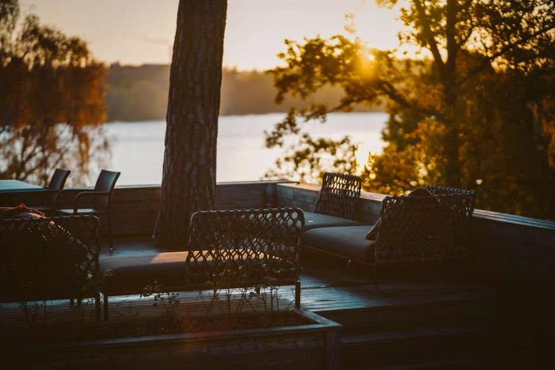
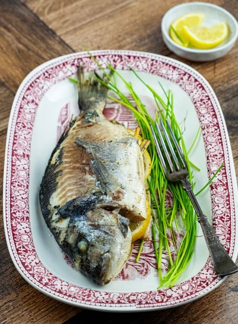
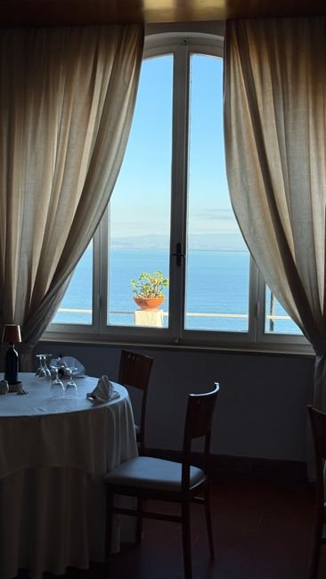

Lesendro Fish Restaurant je bilo jedno od najboljih mjesta koja smo posjetili u Crnoj Gori za svježu ribu. Probali smo jegulju i pastrmku — obije su bile odlične! Terasa na samom jezeru pruža nevjerovatan pogled.

Tradicija Skadarskog jezera, svježa riba i opuštajući ambijent uz vode Vranjine.
Smešten u srce Vranjine na Skadarskom jezeru, Lesendro Fish Restaurant spaja tradicionalnu domaću kuhinju, svježe ulovljenu ribu i jedinstveni miris prirode. Domaći specijaliteti spremljeni po starim recepturama daju nezaboravan doživljaj svakom gostu.
Autentična lokalna jela spremljena sa ljubavlju i pažnjom.
Krap, pastrmka i jegulja iz čistih voda našeg kraja.


Lesendro Fish Restaurant je bilo jedno od najboljih mjesta koja smo posjetili u Crnoj Gori za svježu ribu. Probali smo jegulju i pastrmku — obije su bile odlične! Terasa na samom jezeru pruža nevjerovatan pogled.
Apsolutno izvanredno. Jedno od najboljih ribljih jela koja sam ikada jeo. Uzeli smo riblji specijalitet mix za dvoje. Ukus je bio vrhunski, a vrijednost za novac odlična. Obavezno uzmite hljeb da upijete sos.
Apsolutno divno! Usluga je bila divna, a hrana svježa i ukusna. Imali smo lososa, povrće na žaru, hljeb i sir. Losos je bio ogroman, dovoljan za sve nas!
Ako želite da doživite autentičnu domaću tradicionalnu kuhinju, samo dođite na ovo mjesto, prepustite se domaćinima i uživajte! Moja preporuka je Krap!
tankert, Vranjina 81305, Montenegro
Ponedjeljak – Nedjelja: 12:00 – 22:00